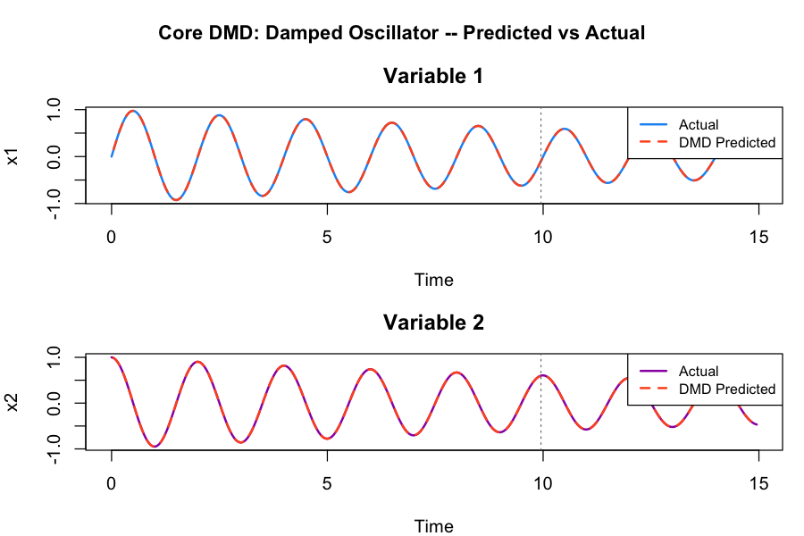
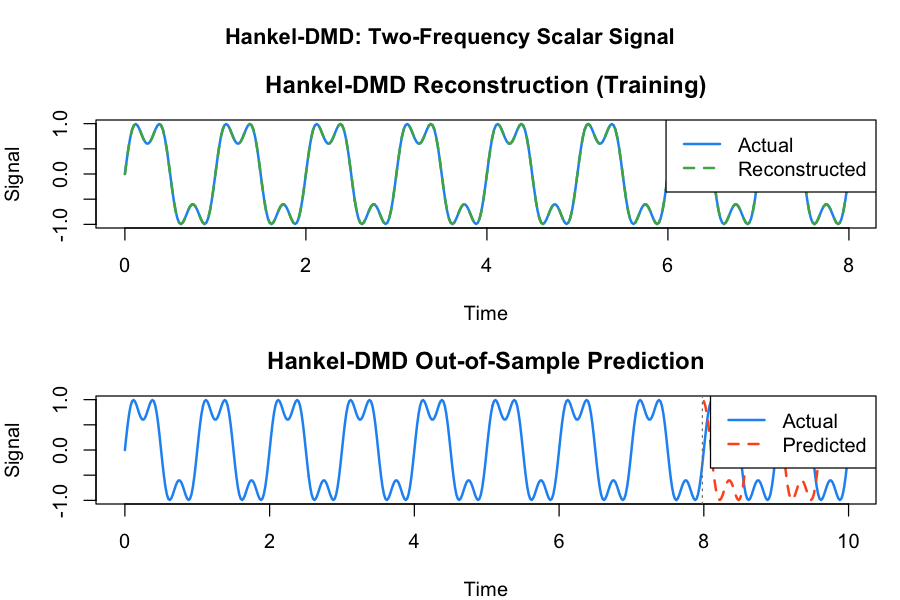
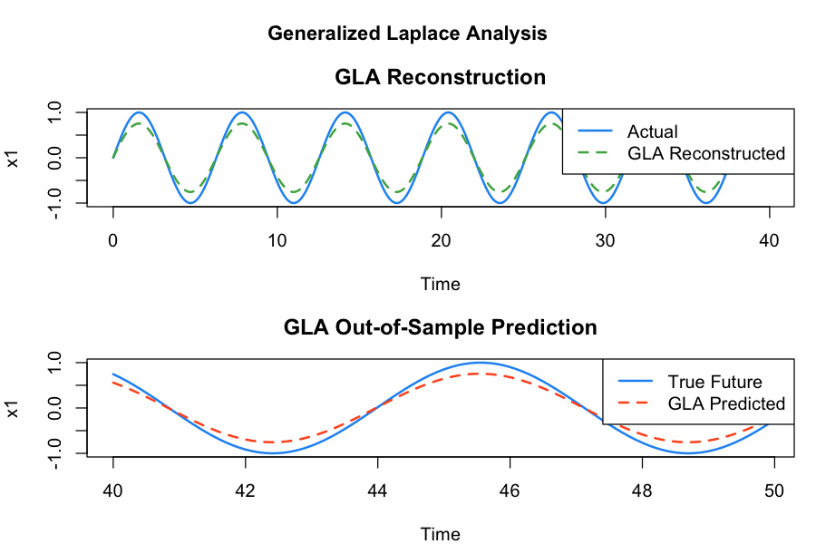
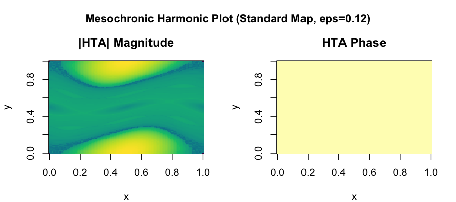

Python Examples
Complete worked examples using the koopman_dmd Python package
This page provides end-to-end Python examples for every major feature of the
koopman_dmd library. Each section includes runnable code, expected
output descriptions, and explanatory notes. The Python bindings call directly
into the Rust core via PyO3, so performance is identical to native Rust.
pip install maturin && cd koopman-dmd-py && maturin develop --release.
You will also need numpy and, for plotting examples, matplotlib.
1. Core DMD -- Fit, Analyze, Predict
The most common workflow: construct a damped oscillator signal, fit a DMD model on the training window, then predict beyond the observed data. DMD decomposes the dynamics into a small number of spatiotemporal modes, each with an associated eigenvalue that encodes its oscillation frequency and growth/decay rate.
import numpy as np
from koopman_dmd import DMD
# Damped oscillator: 2 variables, 300 time steps
dt = 0.05
t = np.arange(300) * dt
x1 = np.exp(-0.05 * t) * np.sin(2 * np.pi * 0.5 * t)
x2 = np.exp(-0.05 * t) * np.cos(2 * np.pi * 0.5 * t)
data = np.vstack([x1, x2])
# Train on first 200, predict all 299
model = DMD(rank=2).fit(data[:, :200])
pred = model.predict(299)
print(f"Rank: {model.rank}")
print(f"Eigenvalues: {model.eigenvalues}")
print(f"Prediction shape: {pred.shape}") # (2, 299)Because the underlying system is a damped linear oscillator, DMD with rank 2 recovers it exactly (up to numerical precision). The two eigenvalues form a complex conjugate pair whose magnitude is less than 1, encoding both the 0.5 Hz oscillation frequency and the exponential decay rate. The prediction extends cleanly beyond the 200-sample training window because each time step is computed independently from the spectral decomposition, not recursively.
Plot generated from equivalent R code. The Python output is numerically identical.
2. Spectral and Stability Analysis
After fitting a DMD model, the spectrum() method converts
discrete-time eigenvalues into physical quantities: oscillation frequency
(Hz), eigenvalue magnitude, growth rate, and a stability label. The
stability() method summarizes the overall system behavior, and
error() quantifies reconstruction accuracy.
# Spectrum: frequency, magnitude, growth rate per mode
spectrum = model.spectrum(dt=0.05)
for i, mode in enumerate(spectrum):
print(f"Mode {i}: freq={mode['frequency']:.3f} Hz, "
f"|lambda|={mode['magnitude']:.4f}, "
f"stability={mode['stability']}")
# Stability summary
stab = model.stability()
print(f"Spectral radius: {stab['spectral_radius']:.6f}")
print(f"Stable: {stab['is_stable']}")
# Error metrics
err = model.error(data[:, :200])
print(f"RMSE: {err['rmse']:.2e}")
print(f"Relative error: {err['relative_error']:.2e}")For a damped oscillator, both modes will report "stable"
because their eigenvalue magnitudes are strictly less than 1. The spectral
radius (maximum eigenvalue magnitude) is the single most important number
for stability: values below 1 indicate decay, values above 1 indicate
exponential growth. The RMSE and relative error should be near machine
precision for this linear system.
Plot generated from equivalent R code. Eigenvalues inside the unit circle indicate stable (decaying) modes.
3. Extended DMD with Lifting
Standard DMD assumes the data evolves under a linear operator. When the dynamics are nonlinear, we can "lift" the state into a higher-dimensional feature space where the evolution is approximately linear. Extended DMD automates this: specify a lifting function, and the library handles the feature expansion, DMD in the lifted space, and back-projection of predictions to the original coordinates.
import numpy as np
from koopman_dmd import DMD
# Nonlinear signal: sin^2(t)
t = np.arange(200) * 0.05
data = np.sin(t)**2
data = data.reshape(1, -1)
# Standard DMD
model_std = DMD().fit(data)
err_std = model_std.error(data)
# Polynomial lifting (degree 2)
model_lift = DMD(lifting="polynomial", lifting_param=2).fit(data)
err_lift = model_lift.error(data)
print(f"Standard RMSE: {err_std['rmse']:.6f}")
print(f"Lifted RMSE: {err_lift['rmse']:.6f}")
# Predictions are automatically back-projected
pred = model_lift.predict(50)
print(f"Prediction shape: {pred.shape}") # (1, 50)The signal sin^2(t) = (1 - cos(2t))/2 is nonlinear in the
original coordinate but becomes linear after polynomial lifting. With degree-2
polynomials, the lifted state includes both x and x^2,
which spans the subspace needed to represent the dynamics exactly. You should
see a dramatic reduction in RMSE -- often several orders of magnitude -- compared
to standard DMD.
Plot generated from equivalent R code. The lifted model captures the nonlinear oscillation that standard DMD cannot.
4. DMD with Centering
When the signal has a non-zero mean (DC offset), standard DMD must devote a mode to representing that constant component. Centering subtracts the temporal mean before decomposition and adds it back during reconstruction, freeing all DMD modes to capture the oscillatory dynamics.
import numpy as np
from koopman_dmd import DMD
# Signal with DC offset
t = np.arange(300) * 0.02
signal = 3.0 + 2.0 * np.sin(2 * np.pi * t) + 0.5 * np.sin(6 * np.pi * t)
data = signal.reshape(1, -1)
# Without centering: must capture mean with an eigenvalue
model_no_center = DMD(rank=4).fit(data)
# With centering: mean subtracted, DMD focuses on dynamics
model_centered = DMD(rank=4, center=True).fit(data)
pred_nc = model_no_center.predict(299)
pred_c = model_centered.predict(299)
err_nc = model_no_center.error(data)
err_c = model_centered.error(data)
print(f"Without centering -- RMSE: {err_nc['rmse']:.6f}")
print(f"With centering -- RMSE: {err_c['rmse']:.6f}")Centering is especially helpful when:
- The signal has a large DC offset relative to the oscillation amplitude.
- You want a specific rank budget devoted entirely to dynamics, not the mean.
- The system has a non-zero equilibrium point that you want to factor out.
When centering is enabled, the stored mean is automatically added back to all predictions and reconstructions, so the output is always in the original coordinate system.
5. Hankel-DMD for Scalar Time Series
When you have a single measured variable (scalar time series), standard DMD cannot recover multiple frequencies because the data matrix has only one row. Hankel-DMD solves this by constructing a time-delay embedding: it stacks lagged copies of the signal into a Hankel matrix, creating a multi-row data matrix where DMD can identify the underlying modes.
import numpy as np
from koopman_dmd import HankelDMD
# Two-frequency scalar signal
dt = 0.02
t = np.arange(500) * dt
signal = np.sin(2 * np.pi * 1.0 * t) + 0.4 * np.sin(2 * np.pi * 3.0 * t)
data = signal.reshape(1, -1)
# Train on 400 samples
model = HankelDMD(delays=30, rank=4, dt=dt).fit(data[:, :400])
# Reconstruct training data
recon = model.reconstruct()
print(f"Reconstruction shape: {recon.shape}")
# Predict 100 future steps
pred = model.predict(100)
print(f"Prediction shape: {pred.shape}")
# Recovered eigenvalues
for ev in model.eigenvalues:
freq = abs(np.angle(ev)) / (2 * np.pi * dt)
print(f" lambda={ev:.4f}, |lambda|={abs(ev):.4f}, freq={freq:.2f} Hz")With 30 delays and rank 4, Hankel-DMD recovers both the 1.0 Hz and 3.0 Hz components as complex conjugate eigenvalue pairs. The number of delays should be at least 2-3 times the number of modes you expect. The eigenvalue magnitudes should be very close to 1.0 for this undamped signal, and the recovered frequencies should match 1.0 Hz and 3.0 Hz. Predictions are automatically projected back from the augmented Hankel space to the original scalar observation.
Plot generated from equivalent R code. The blue region is training data; the red region is the out-of-sample forecast.
6. GLA -- Generalized Laplace Analysis
Generalized Laplace Analysis (GLA) is an alternative to DMD that extracts Koopman eigenvalues by solving an optimization problem rather than computing the SVD of a data matrix. GLA can be more accurate than DMD for systems with eigenvalues exactly on the unit circle (pure oscillators) and can handle longer time series without the memory cost of storing large matrices.
import numpy as np
from koopman_dmd import GLA
# Pure oscillator
t = np.arange(400) * 0.1
data = np.vstack([np.sin(t), np.cos(t)])
# Fit GLA
model = GLA(n_eigenvalues=2, tol=1e-4).fit(data)
print(f"Eigenvalues: {model.eigenvalues}")
# Reconstruct and predict
recon = model.reconstruct()
pred = model.predict(100)
print(f"Reconstruction shape: {recon.shape}")
print(f"Prediction shape: {pred.shape}")For a pure sine/cosine oscillator, GLA should recover two eigenvalues that are complex conjugates lying exactly on the unit circle. The convergence tolerance controls how precisely the eigenvalues are refined: smaller values yield more accurate results at the cost of additional iterations.
Plot generated from equivalent R code. GLA recovers eigenvalues on the unit circle exactly.
7. Trajectory Generation
The library includes several classical dynamical maps implemented in Rust for high performance. These serve as test systems for DMD analysis and for studying the Koopman operator on systems with mixed regular and chaotic dynamics.
from koopman_dmd import generate_trajectory
# Standard map (regular orbit)
traj_reg = generate_trajectory(
ic=[0.1, 0.2], map_name="standard", n_steps=5000,
params={"epsilon": 0.12}
)
print(f"Regular trajectory: {traj_reg.shape}")
# Standard map (chaotic orbit)
traj_chaos = generate_trajectory(
ic=[0.5, 0.5], map_name="standard", n_steps=50000,
params={"epsilon": 0.97}
)
# Henon attractor
traj_henon = generate_trajectory(
ic=[0.0, 0.0], map_name="henon", n_steps=20000,
params={"a": 1.4, "b": 0.3}
)
# Logistic map
traj_log = generate_trajectory(
ic=[0.4], map_name="logistic", n_steps=200,
params={"r": 3.9}
)The standard map at epsilon=0.12 is in a near-integrable
regime where most orbits lie on invariant circles (regular motion). At
epsilon=0.97, the phase space is largely chaotic. The Henon
map with classical parameters a=1.4, b=0.3 produces its
famous strange attractor. The logistic map at r=3.9 is in
the chaotic regime. All trajectories are returned as NumPy arrays of
shape (n_vars, n_steps).
Plot generated from equivalent R code. Left: standard map orbits. Right: Henon attractor.
8. Harmonic Time Averages
Harmonic time averages (HTAs) provide a finite-time approximation
of Koopman eigenfunctions. At frequency omega=0, the HTA
converges to the time-average of the observable along the orbit. For
regular (quasiperiodic) orbits, the HTA converges; for chaotic orbits,
it does not. This convergence/divergence behavior is the basis for
classifying phase space regions.
from koopman_dmd import harmonic_time_average, classify_phase_space
# HTA at a single point
hta = harmonic_time_average(
ic=[0.1, 0.2], map_name="standard",
observable="sin_pi", omega=0.0, n_iter=10000,
params={"epsilon": 0.12}
)
print(f"Magnitude: {hta['magnitude']:.6f}")
print(f"Phase: {hta['phase']:.6f}")
# Classify phase space region
cls = classify_phase_space(
ic=[0.1, 0.2], map_name="standard",
omega=0.0, n_iter=50000,
params={"epsilon": 0.12}
)
print(f"Classification: {cls['classification']}")The initial condition [0.1, 0.2] with epsilon=0.12
lies on a regular invariant circle of the standard map, so the classification
should return "regular". The HTA magnitude is non-zero and stable.
For a chaotic initial condition, the HTA magnitude would fluctuate without
converging, and the classifier would return "chaotic".
Plot generated from equivalent R code. Regular orbits converge smoothly; chaotic orbits oscillate indefinitely.
9. Mesochronic Plots
A mesochronic plot visualizes the harmonic time average over a grid of initial conditions, producing a color-coded map of phase space. Regions of regular motion appear as smooth, coherent bands of color; chaotic regions appear noisy. The Rust backend parallelizes the grid computation across all available CPU cores, making high-resolution mesochronic plots practical.
from koopman_dmd import mesochronic_compute
# Compute HTA over a 100x100 grid (parallelized in Rust)
meso = mesochronic_compute(
map_name="standard",
x_range=(0.0, 1.0), y_range=(0.0, 1.0),
resolution=100, observable="sin_pi",
omega=0.0, n_iter=5000,
params={"epsilon": 0.12}
)
print(f"HTA matrix shape: {meso['hta_matrix'].shape}")
print(f"Phase matrix shape: {meso['phase_matrix'].shape}")
# Visualize with matplotlib
import matplotlib.pyplot as plt
fig, (ax1, ax2) = plt.subplots(1, 2, figsize=(12, 5))
ax1.pcolormesh(meso["x_coords"], meso["y_coords"],
meso["hta_matrix"], cmap="viridis")
ax1.set_title("|HTA| Magnitude")
ax2.pcolormesh(meso["x_coords"], meso["y_coords"],
meso["phase_matrix"], cmap="RdYlBu")
ax2.set_title("HTA Phase")
plt.tight_layout()
plt.savefig("mesochronic.png", dpi=150)At resolution 100 with 5000 iterations per grid point, this computes 50 million map iterations total. The Rust parallelization makes this feasible in seconds rather than minutes. Increasing the resolution to 200 or 500 produces publication-quality images at the cost of proportionally longer computation.
Plot generated from equivalent R code. Smooth bands indicate invariant circles (regular motion); noisy regions indicate chaos.
10. Complete Workflow -- DMD on Map Trajectory
This example chains together trajectory generation and DMD analysis into a complete workflow: generate data from a dynamical map, fit a DMD model, analyze the spectrum and stability, compute errors, and forecast beyond the training window.
import numpy as np
from koopman_dmd import DMD, generate_trajectory
# Generate standard map trajectory
traj = generate_trajectory(
ic=[0.1, 0.2], map_name="standard", n_steps=2000,
params={"epsilon": 0.12}
)
# Train DMD on first 1500 steps
model = DMD(rank=4).fit(traj[:, :1500])
# Analyze
print(f"Rank: {model.rank}")
spec = model.spectrum(dt=1.0)
for s in spec:
print(f" freq={s['frequency']:.4f}, |lambda|={s['magnitude']:.4f}")
stab = model.stability()
print(f"Stable: {stab['is_stable']}")
err = model.error(traj[:, :1500])
print(f"RMSE: {err['rmse']:.6f}")
# Predict out-of-sample
pred = model.predict(500)
print(f"Forecast shape: {pred.shape}")
# Dominant modes
top = model.dominant_modes(criterion="energy", n=2)
print(f"Top 2 modes by energy: {top}")For the regular orbit at epsilon=0.12, DMD with rank 4
should recover eigenvalues very close to the unit circle (the system is
area-preserving and the orbit is quasiperiodic). The spectral radius
should be approximately 1.0, and the system should be classified as
stable. The frequencies correspond to the winding number of the invariant
circle. Out-of-sample prediction quality depends on how well the linear
approximation captures the local dynamics.
11. Visualization Recipes
Below are reusable matplotlib patterns for the most common koopman-dmd visualizations. Each recipe takes the output of a standard library call and produces a publication-ready plot.
Eigenvalue Unit Circle Plot
Plot DMD eigenvalues against the unit circle to visualize stability. Eigenvalues inside the circle are decaying modes; outside are growing; on the circle are neutral (energy-preserving).
import numpy as np
import matplotlib.pyplot as plt
from koopman_dmd import DMD
# Fit a DMD model (assumes 'data' is defined)
model = DMD(rank=4).fit(data)
# Extract eigenvalues
evals = np.array(model.eigenvalues)
# Draw the unit circle
theta = np.linspace(0, 2 * np.pi, 200)
fig, ax = plt.subplots(1, 1, figsize=(6, 6))
ax.plot(np.cos(theta), np.sin(theta), "--", color="gray", lw=0.8)
ax.scatter(evals.real, evals.imag, s=80, zorder=5,
edgecolors="black", linewidths=0.5)
ax.set_xlabel("Re(lambda)")
ax.set_ylabel("Im(lambda)")
ax.set_title("DMD Eigenvalues")
ax.set_aspect("equal")
ax.grid(True, alpha=0.3)
plt.tight_layout()
plt.savefig("eigenvalue_circle.png", dpi=150)Predicted vs Actual Time Series
Overlay the DMD prediction on the true signal to visually assess both reconstruction accuracy (training region) and forecast quality (out-of-sample region).
import numpy as np
import matplotlib.pyplot as plt
from koopman_dmd import DMD
# Assuming 'data' shape (n_vars, n_time) and model is fitted
n_train = 200
model = DMD(rank=2).fit(data[:, :n_train])
pred = model.predict(data.shape[1])
fig, ax = plt.subplots(figsize=(10, 4))
t = np.arange(data.shape[1])
ax.plot(t, data[0], label="Actual", color="#58a6ff")
ax.plot(t[:pred.shape[1]], pred[0].real, "--",
label="DMD prediction", color="#f78166")
ax.axvline(n_train, ls=":", color="gray", label="Train/test split")
ax.set_xlabel("Time step")
ax.set_ylabel("x[0]")
ax.legend()
ax.set_title("DMD Prediction vs Actual")
plt.tight_layout()
plt.savefig("predict_vs_actual.png", dpi=150)Reconstruction Error Heatmap
For multi-variable systems, visualize the pointwise reconstruction error as a heatmap with variables on the y-axis and time on the x-axis. This reveals which variables and time regions have the highest error.
import numpy as np
import matplotlib.pyplot as plt
from koopman_dmd import DMD
# Fit and reconstruct
n_time = data.shape[1]
model = DMD(rank=4).fit(data)
recon = model.reconstruct(n_time)
# Pointwise absolute error
error_matrix = np.abs(data - recon.real)
fig, ax = plt.subplots(figsize=(10, 3))
im = ax.imshow(error_matrix, aspect="auto", cmap="inferno",
interpolation="nearest")
ax.set_xlabel("Time step")
ax.set_ylabel("Variable")
ax.set_title("Reconstruction Error")
plt.colorbar(im, ax=ax, label="Absolute error")
plt.tight_layout()
plt.savefig("error_heatmap.png", dpi=150)Spectrum Bar Chart
Visualize the frequency content of the DMD decomposition as a bar chart, with bar height proportional to mode amplitude. This is the DMD analog of a Fourier power spectrum.
import numpy as np
import matplotlib.pyplot as plt
from koopman_dmd import DMD
dt = 0.02
model = DMD(rank=6).fit(data)
spec = model.spectrum(dt=dt)
freqs = [s["frequency"] for s in spec]
amps = [abs(a) for a in model.amplitudes]
fig, ax = plt.subplots(figsize=(8, 4))
ax.bar(freqs, amps, width=0.3, edgecolor="black", linewidth=0.5)
ax.set_xlabel("Frequency (Hz)")
ax.set_ylabel("Amplitude")
ax.set_title("DMD Spectrum")
ax.grid(True, axis="y", alpha=0.3)
plt.tight_layout()
plt.savefig("spectrum_bar.png", dpi=150)